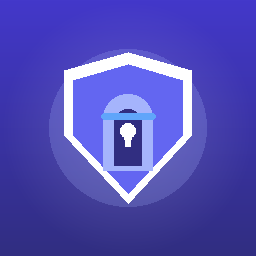

订阅
粘贴 3X-UI 订阅 URL 或分享链接，本地解析并保存节点列表。
连接 / 断开
首页一键连接与断开，状态清晰；基于 Android VpnService。
节点 · 设置
在节点列表中选择出口，在设置中管理订阅；内核为可插拔的 libbox。

USGate 0.2.1USGate 对接 3X-UI 订阅（VLESS / VMess / Shadowsocks），提供连接控制与节点选择， 并通过 libbox（sing-box）在系统 VPN 上代理真实流量。
粘贴 3X-UI 订阅 URL 或分享链接，本地解析并保存节点列表。
首页一键连接与断开，状态清晰；基于 Android VpnService。
在节点列表中选择出口，在设置中管理订阅；内核为可插拔的 libbox。